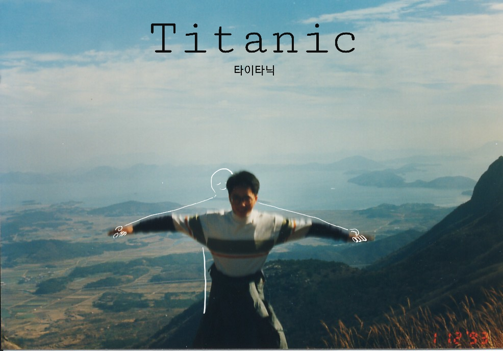
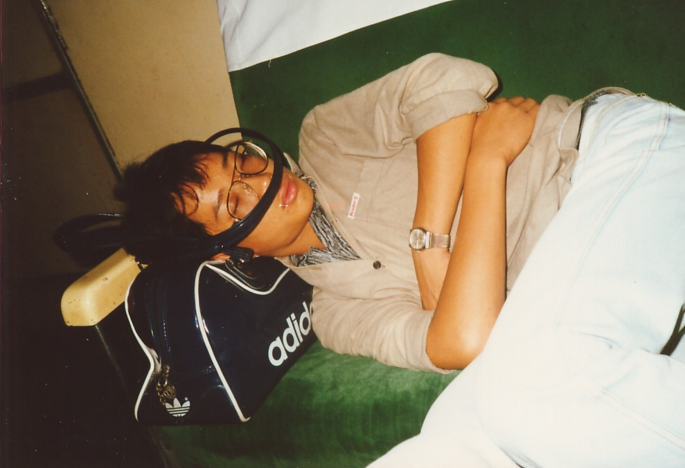
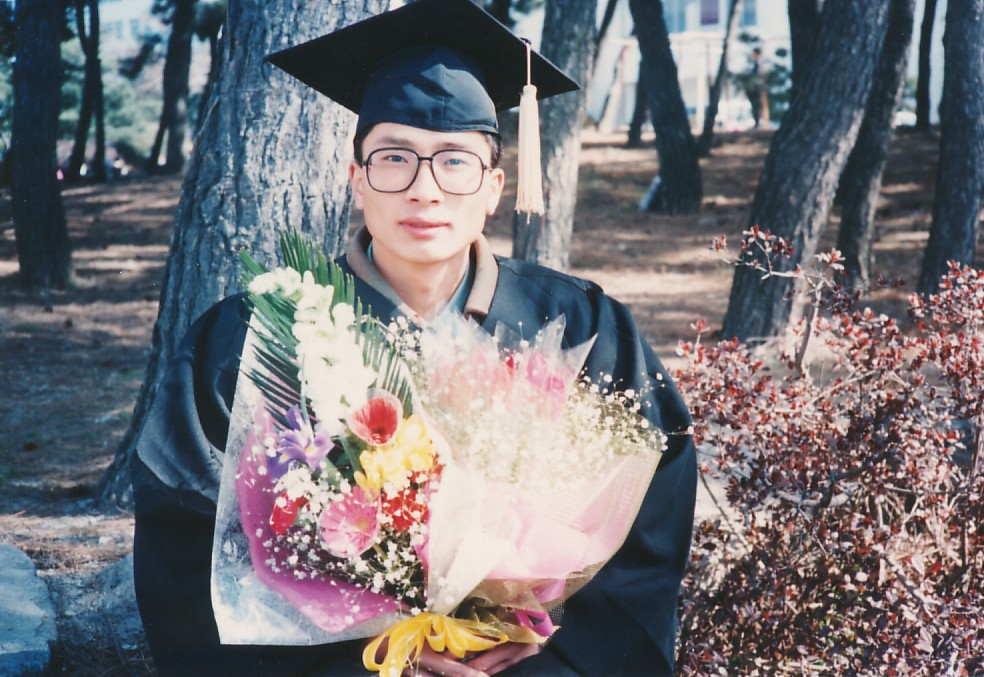
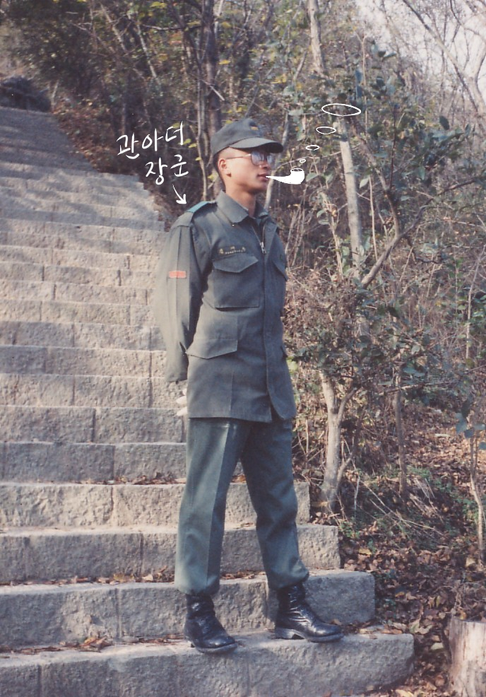
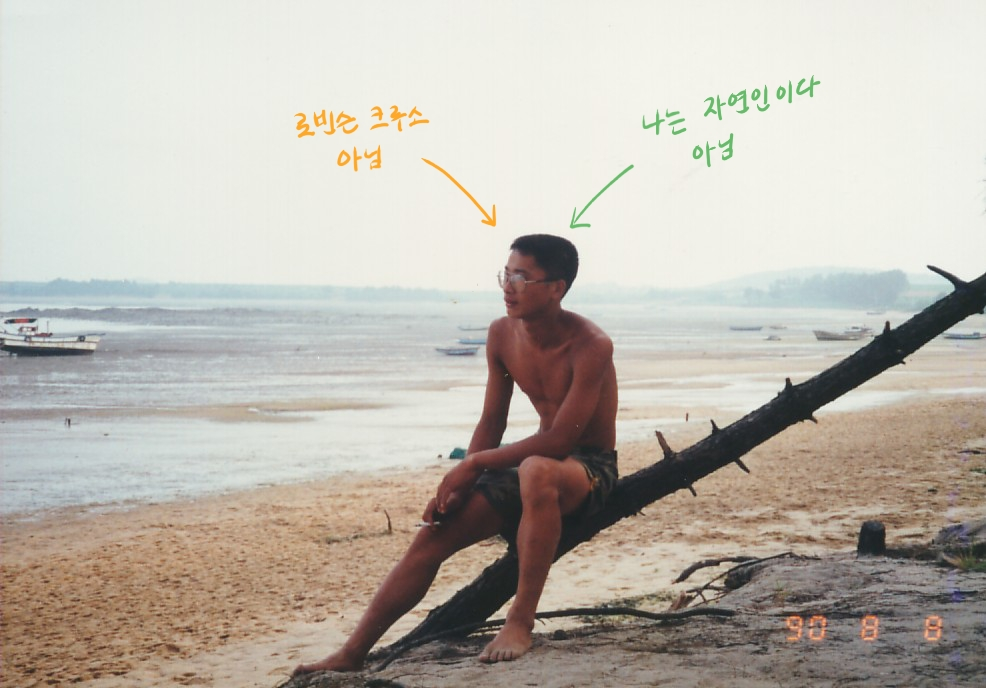

3. 재관의 대학과 군대 시절



88학번 재관은 원광대학교 주변 하숙집에 살며 대학 생활을 시작한다. 재관은 외향형에 가까운 성격을 가지고 있는데, 동기들과 함께 어울리며 찍은 사진들에서도 그러한 모습을 찾아볼 수 있다.
재관은 꽤 유쾌한 대학 생활을 했는데, 한 가지 예로는 (다시 말하지만) 재관은 그때 그 시절이니 가능했던 기말고사 시험 중 몰래 교과서를 펼쳐보는 부정행위를 저지르기도 했다.
이쯤 되면 그의 도덕적 측면에 의문을 품게 되는데, 다행히 53세인 지금은 사회에 명백한 피해를 끼치지 않는 선을 지키며 살아가고 있다. 가끔 속도위반 범칙금 종이가 날아오긴 하지만.
재관은 또한 대학을 다니며 검도부 활동을 했다. 그래서 어릴 적 재관과 권투 시합을 하면 그렇게 머리 쪽을 잘 공략했나보다 싶다.


입대할 나이가 된 재관은 다행히(?) 현역 입대를 면하게 된다. 상근병이 되어, 상사가 많지 않은 환경에서 재관은 무사히 군 생활을 마친다.
재관의 군인 시절 사진을 보면 표정이 어둡거나 매우 힘들어보이지는 않는데, 그래서인지 재관이 군 생활을 조금은 즐겁게 하지 않았나 하는 생각이 든다. 하지만 재관의 배우자는 재관이 항상 사진 찍을 때는 웃는다는 정보를 주었기에 재관의 군 생활은 다른 군인들과 마찬가지로 힘들었을 것이라고 추측할 수 있다.
제대한 재관은 새로운 마음으로 건축 공부를 열심히 하기 시작했고, 오래 지나지 않아 학사모를 쓰게 된다. 🎓